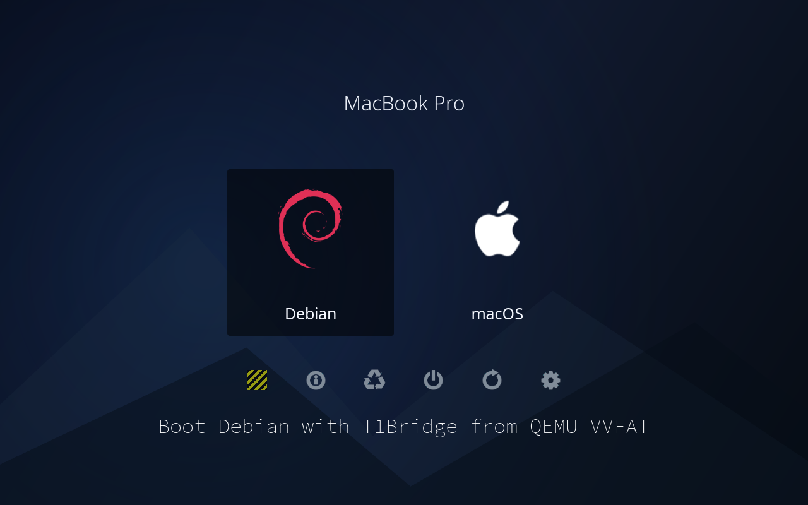

Touch Bar unter Debian
Eine eigene Touch Bar für KDE Plasma auf T1-MacBooks. Getestet auf dem MacBookPro14,2 mit Debian 13, Plasma 6.3.6 und Linux 6.12.116.
Logos, UZeit und 2FA

 BBS Einbeck
BBS Einbeck LaberPapa
LaberPapa

UZeit
Ein Tipp auf den Unterrichtsstatus öffnet UZeit.
Lokaler 2FA-Helfer
Der Helfer erzeugt den Code aus einem Eintrag im lokalen Schlüsselbund.
Weitere Ansichten der Touch Bar


Funktionen im Überblick
Helligkeit und Ton
Bildschirm, Tastaturbeleuchtung und Lautstärke über Schieberegler mit KDE-Anzeige einstellen.
Medien und Kurzbefehle
Wiedergabe steuern, das Mikrofon stummschalten, ein Terminal öffnen oder zur Fn-Leiste wechseln.
Systemstatus
Die tatsächliche Ladung relativ zur angelernten Maximalkapazität und bei angeschlossenem Netzteil einen Blitz im farbigen Batteriesymbol anzeigen; ein Tipp öffnet die KDE-Energieverwaltung. Dazu kommen CPU-Temperatur und Auslastung.
System und Startmenü



Touch Bar einrichten
Voraussetzung ist ein funktionierendes T1Bridge. Die Anleitung beschreibt die Kernel-Anpassungen für Debian 13, den Bau des Renderers und den KDE-Benutzerdienst.
Zur Einrichtungsanleitung